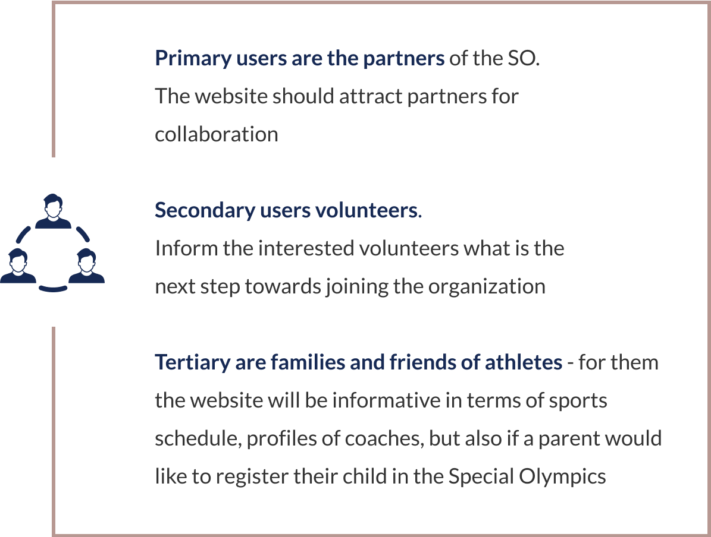

STAKEHOLDER INTERVIEW

The purpose of the website is not to target people with intellectual disabilities
At the beginning of the project, we were focused on collecting ideas, requirements and business goals that are directly related to the project. We had a Zoom meeting and interviewed three stakeholders.
During the stakeholder interview, we learned that the purpose of the website is not to target people with intellectual disabilities, instead we had to focus on representing their stories and achievements. The website is going to be a starting point for communication with their current partners and digital exposure to the public.
